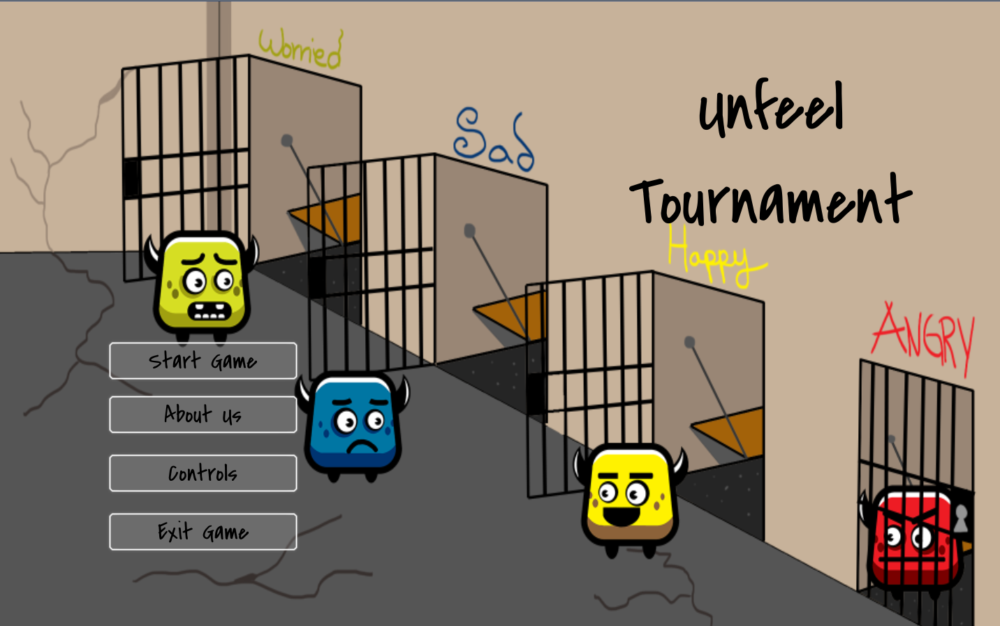
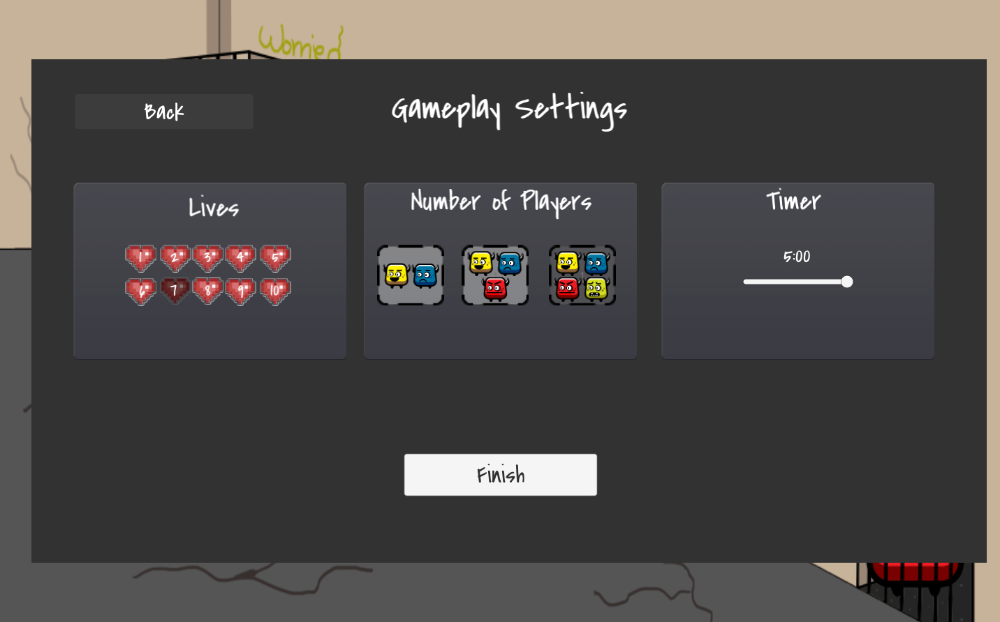
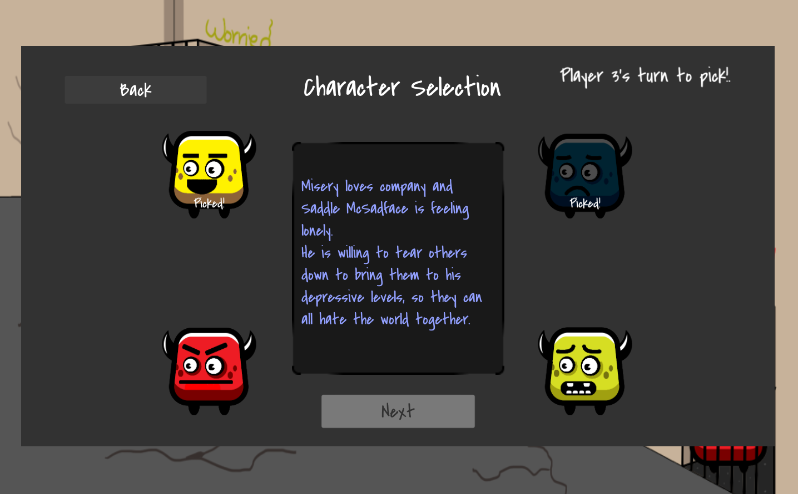
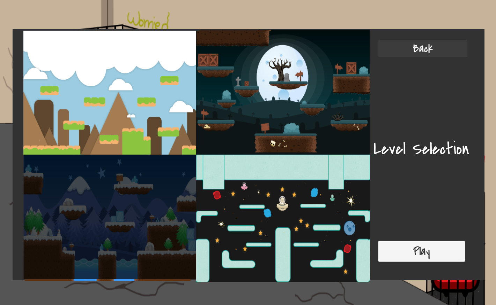
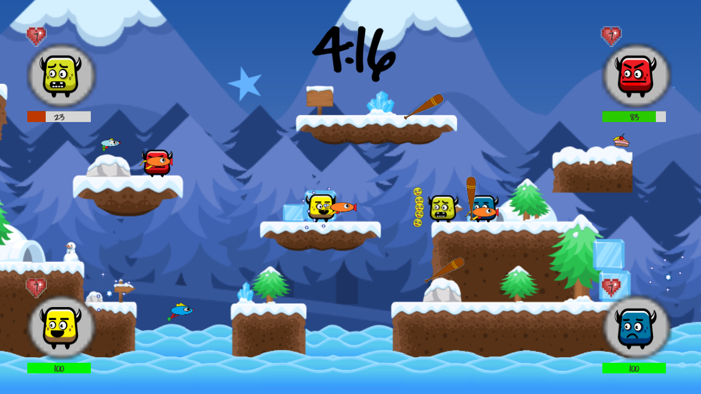
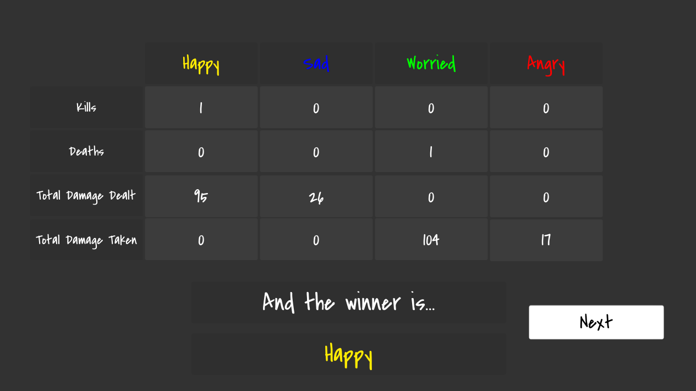
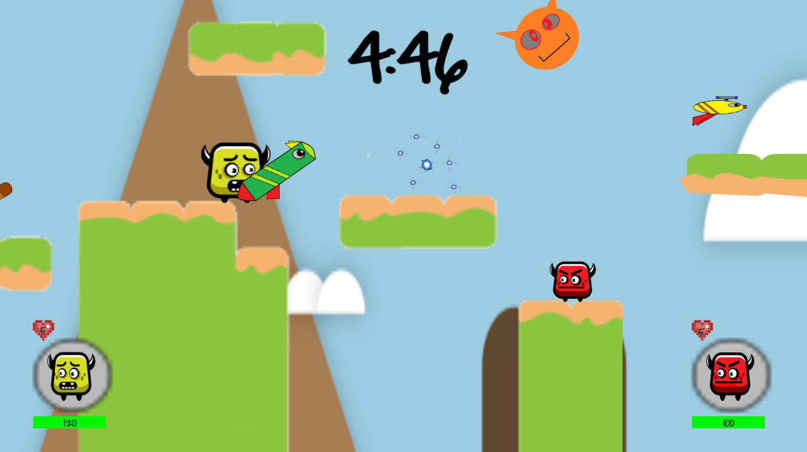

Development
Unfeel Tournament was made for a game development course in UCI (COMP SCI 113). My team and I came up with this idea of emotions, Angry, Happy, Sad, Worried, fighting for control over a person's feelings. The last emotion standing would end up being the emotion that person feels. The emotions begin at a landscape, representing the natural world (and space), and utilize weapons scattered throughout to fight for control. The goal of this game, was to create a fast-paced, simple, and fun multiplayer experience. Unfeel Tournament was made in Unity3D and C#.

The story of the game.
The main menu includes a background that shows all four emotions. From the main menu, you can choose to play a game, look at the controls, or check out the team.

The main menu.
To accommodate four player local multiplayer, we added Xbox 360 controller support. Two players would use the keyboard + mouse, and two others would use controllers (or extra keyboards).

The controls.
When you begin a game, you must first decide on the game settings: number of lives, number of players, and duration. Each player begins with the number of lives chosen, and once a player loses all of their lives, they are dead. The game ends when the game time has elapsed the duration chosen. Once the game ends by time, the player with the most kills is chosen as a winner. Otherwise, the game ends when there is only one player left alive, and that player is chosen as a winner.

The game settings: 7 lives, 4 players, and 5 min. duration.
Once the game settings are chose, each player takes turns choosing an emotion. Only one of each emotion can appear. Emotions have no impact on gameplay.

The character selection. Happy and Sad have already been chosen. Player 3 can choose from Angry and Worried.
Finally, after the characters are selected, the level must be chosen. The game comes with 4 different levels- each with its own theme: Mountain, Graveyard, Snowy, Space.

The level selection. The snowy level has been chosen.
The players now enter the game, and can start playing. There are specific spawn points for items, and each spawn point has its own selection of items that can spawn. Certain items have a higher chance of spawning. Players pick up items, and use them. If it is a weapon, the player equips that weapon and replacing their previously wewapon. Otherwise, the player immediately gains the effects of that item for a short time.
Happy and Sad both have weapons equipped. Worried is gravely injured, while Angry is waiting patiently.

Poor Worried, Happy shooting a bubble shotung on one side, and Sad with a baseball bat on the other.
There are a number of different weapons and items:
- Bubble Gun - A regular gun that fires bubbles.
- Assault Bubble Gun - A bubble gun with a much faster fire rate.
- Bubble Shotgun - A shotgun that fires 5 bubbles in a cone.
- Bubble Sniper - A very long-range bubble gun that fires high-damaging bubbles.
- Mega Bubble Launcher - A launcher that fires a large, explosive bubble in an arc.
- Bubble Thrower - A weapon that fires a stream of tiny bubbles.
- Baseball Bat - A regular, ol' baseball bat.
- Cake - Increases your health, and makes you bigger.
- Star - Makes you move faster, and jump higher.
Once the game has ended, the players enter the results screen, showing the stats and the winner.

The game ended early, so Happy wins with his/her 1 kill over all of the other players.

Happy's ending. Each emotion has their own ending.

The fifth ending, where no one wins.

The mountain level. Worried holds the Mega Bubble Launcher.

The graveyard level. Happy wields the Bubble Sniper, and fire at Sad.

The space level. Sad, equipped with the Bubble Thrower equipped, attacks Angry mid-jump.
The character models and animations were created from a single texture from bevouliin.com. The item and bubble textures, the map textures, the sfx, and the music were also retrieved from royalty-free assets online.